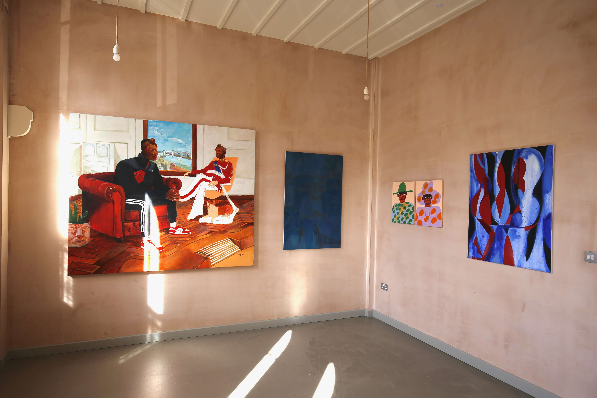
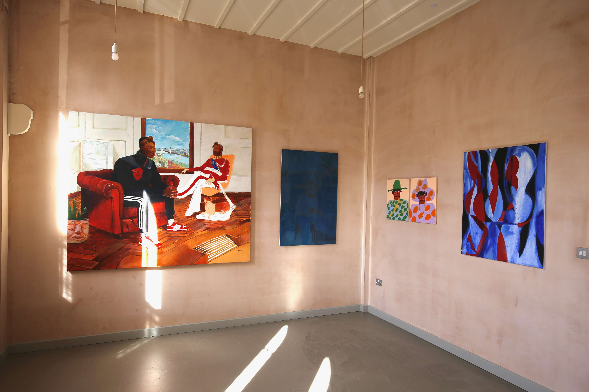
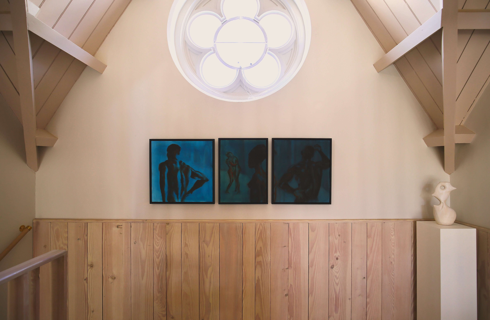
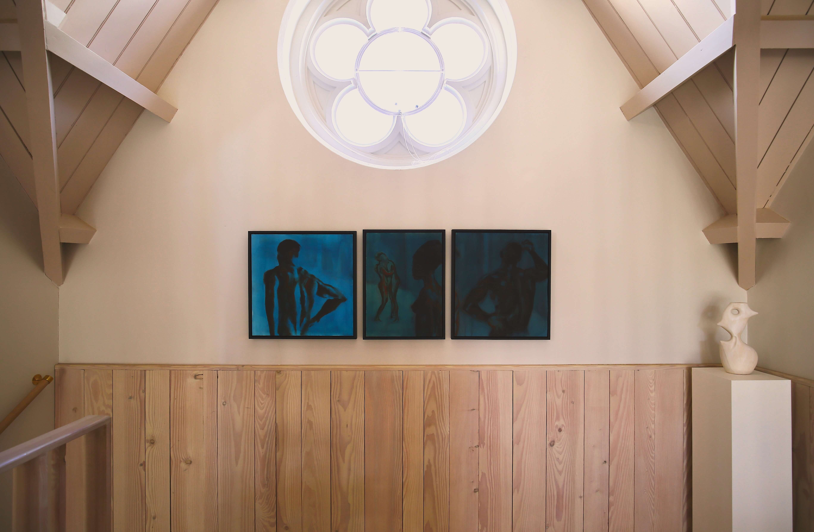

Exhibitions
 

 


Upcoming Exhibitions
The Drawing Year 2024: End of year exhibitionLocation: 19-22 Charlotte Rd, London EC2A 3SG
Dates: Dec 4th - 19th 2024
KATES-FERRI PROJECTS: Pangea
Location: 561 Grand St, New York, NY 10002, US
Dates: Jan 17th - Feb 15th 2025
Past Exhibitions
2020 Virtual Exhibition, titled ‘Unlocked’
2021 Online Exhibition, Group show ‘Primordial soup’
2021 OUDS New writing festival
2021 ‘In Heavenly Blue’ with Sola Olulode, Pacers Gallery in Lagos, Nigeria
2021 Virtual exhibition, titled ‘Isolation’
2021 ‘The Other Within The Other: A Queer and Black Exhibition’
2021 Kanbi projects - ‘Untangling the Perils that Tangle us?’ Group exhibition
2022 Old Fire Station Gallery ‘Intimacies, after Vallatton’ Exhibition
2022 Magdalen college Race and Empire Exhibition
2022 Blackwhite gallery ‘Raising boys’ Group show
2022 Steingold Contemporary ‘HAVEN’ Group show
2023 Ruskin School of Art ‘Degree Show’
2023 The Maffioli Art Group, ‘Exhibition at the Scalpel’ Group show
2024 Black Curatorial in collaboration with Black Eats LDN at Woolwich Works, Group show
2024 O’DA Art Gallery ‘Within our Midst’ showing in Lagos with Michael Igwe
2024 Rele Gallery ‘Stretching the Light’ Group show, Curated by Alayo Akinkugbe
2024 Next Gen Masters: The Bicester Village x LUX Magazine, group show
2024 ‘Best of the Drawing Year 2024’ at Christie’s in London
2024 The Drawing Year 2024: End of year exhibition & Open studios
Awards
2019 Artists residency at Dumfries House
2021 Artists residency Magdalen College, Race and Empire Exhibition
2021 Geoffrey Rhodes Prize for Fine Art
2022 Artist residency in Nigeria, Lagos with HFACTOR, streets lights collective
2023 Stuart Morgan Prize for Art History for ‘Let The Church Sink, LetThe Ship Say Amen’ by Paul Majek
2024 The 2024 Morrison Forester Art Prize
2024 Next Gen Masters: the Bicester Village x LUX Magazine Celebration of Emerging Artists
2024 The Moritz-Heyman Residency at Borgo Pignano
2024 The Ingram Prize Exhibition